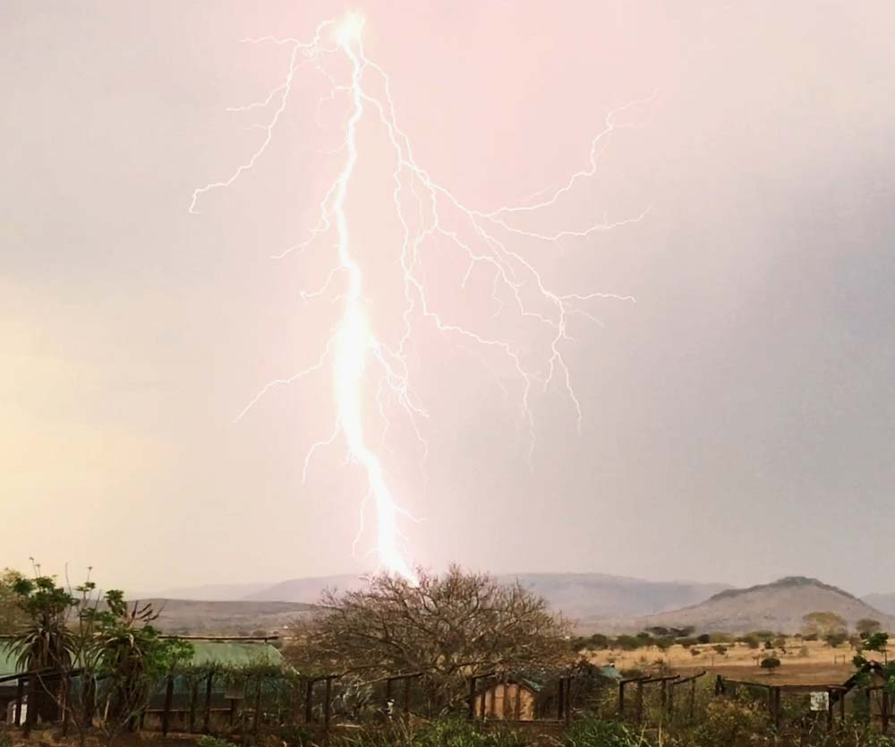
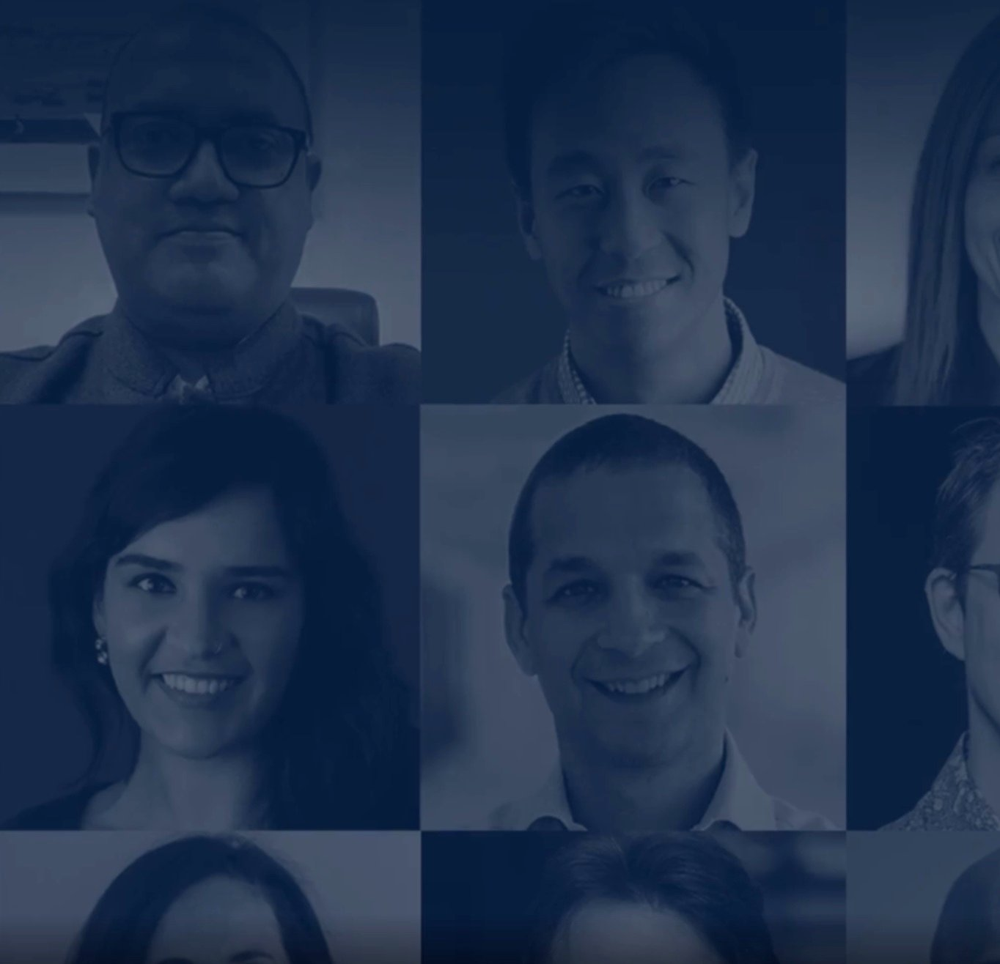
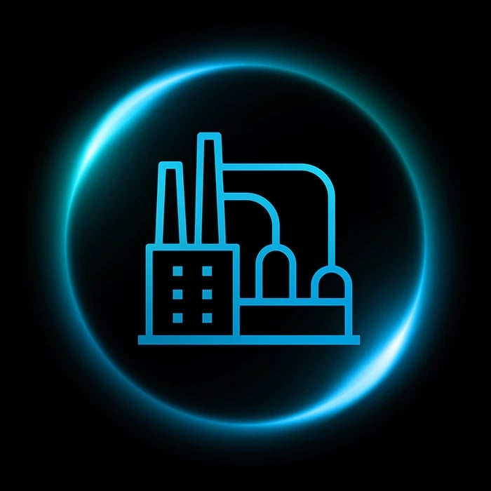
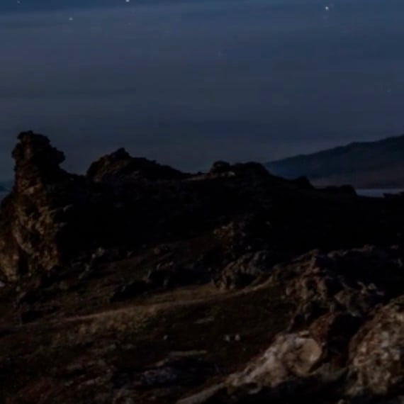
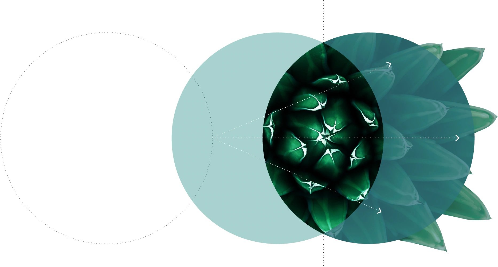
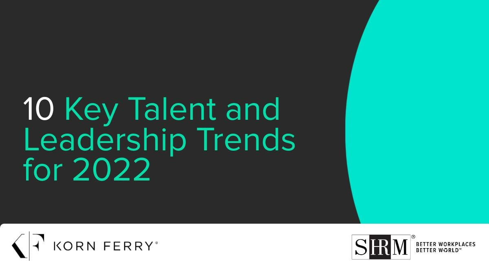

Last week, my colleague Alia shared her view on some of the trends already dominating content in 2022. This week, we’re looking at what professional services firms and other thought leaders are saying about their expectations for business in 2022.
The Gold Standard has picked out some of the more interesting forecasts, including lists of trends and themes and functional and industry-specific discussions. Authors offer their views on topics ranging from supply chain bottlenecks and labor shortages to the Great Resignation.
Back to top
Promise and peril”
Full credit to Kearney for taking the road less traveled and focusing on five less obvious—and fascinating—trends: the race for quantum primacy, sharp rise in water dislocations, escalation of ungovernability, central bank digital currencies go mainstream, and the new age of genetic manipulation.
What major themes will we see in global media in 2022? What should we see more of?”
McKinsey asked journalists and media leaders for their views on the big news topics of 2022. They were asked to respond to two questions:


Major themes and trends for 2022 and beyond
“
Kearney
McKinsey
“
you predict will dominate media and grab our attention in 2022?
– What business, economics, or policy story or theme do
– What topic do you think will be under-covered, and
why does it merit more of our attention?
The CEO agenda in 2022: Harnessing the potential of growth jolts”
McKinsey
“
The coronavirus pandemic prompted innovation and behavioral changes. McKinsey authors argue that these shifts produced a “three-phase ripple effect” in the economy that can spur future growth and prosperity.
Priorities for the
C-suite in 2022

BCG
Eleven BCG partners weigh in with advice for the C-suite, covering topics ranging from committing to net zero and the power of artificial intelligence to rethinking relationships with employees.
29 big ideas that
will change our
world in 2022”
LinkedIn
“
At the end of each year, LinkedIn editors ask its “influencers” to share the big ideas they see in the year ahead. This year’s list includes the idea that companies that introduce a four-day workweek could achieve a competitive advantage.
2022 sector and functional outlooks
Artificial intelligence
Six AI business predictions for 2022”
PwC
The authors identify what they consider the six most important AI trends for business in 2022, including the convergence of AI with data and cloud and how simulations will unchain AI’s power.
“
Chemicals
2022 chemical industry outlook:
On track for a
strong recovery”
Deloitte
“
High demand for commodity and specialty chemicals should keep prices strong, these Deloitte authors conclude. But higher costs for raw materials could erode margins. Sustainability and decarbonization will be at the top of the industry agenda.
Cybersecurity
Cybersecurity considerations 2022: Trust through security
KPMG
This KPMG report discusses eight considerations that executives should prioritize to address cyberattacks. Among them are adopting security for the cloud and focusing on data privacy.
Marketing and sales
2022 global marketing trends: Thriving through customer centricity
Deloitte
The authors identify seven trends in the marketing world, including how to sell to customers in a “cookie-less” world and “supercharging customer service with AI.”
Organization, talent, and the future of work
10 key talent and leadership trends for 2022”
Korn Ferry
This interesting list from the executive search firm Korn Ferry explores topics such as whether the Great Resignation will continue, re-establishing work relationships in a Zoom world, and putting health and wellness center stage in the workplace.
“
Future of work trends in 2022
Korn Ferry
In this Korn Ferry report, the authors discuss seven trends in the future of work: reinvention, scarcity, vitality, sustainability, individuality, inclusivity, and accountability.
Retail
State of fashion 2022: An uneven recovery and new frontiers
McKinsey
In this comprehensive report, McKinsey authors find that the global fashion industry is “once again finding its feet,” having adapted to new consumer priorities and using digital to spur growth. But challenges abound, including supply chain disruption, uncertain demand, and profit pressure.
Risk
Global risks report 2022
World Economic Forum
This World Economic Forum report, prepared in cooperation with Marsh McLennan, SK Group, and the Zurich Insurance Group, presents the results of its annual “Global Risks Perception Survey” and offers an analysis of risks from economic, societal, environmental, and technological tensions. Generally speaking, it doesn’t make for happy reading. For example, only 16 percent of the nearly 1,000 respondents said they were positive and optimistic about the outlook for the world.
Supply chain
Six key trends impacting global supply chains in 2022”
KPMG
These KPMG authors address the continuing effects of the pandemic on the global supply chain. Among the six trends they cite are logistics disruption, production delays, and overreliance on third parties.
“



